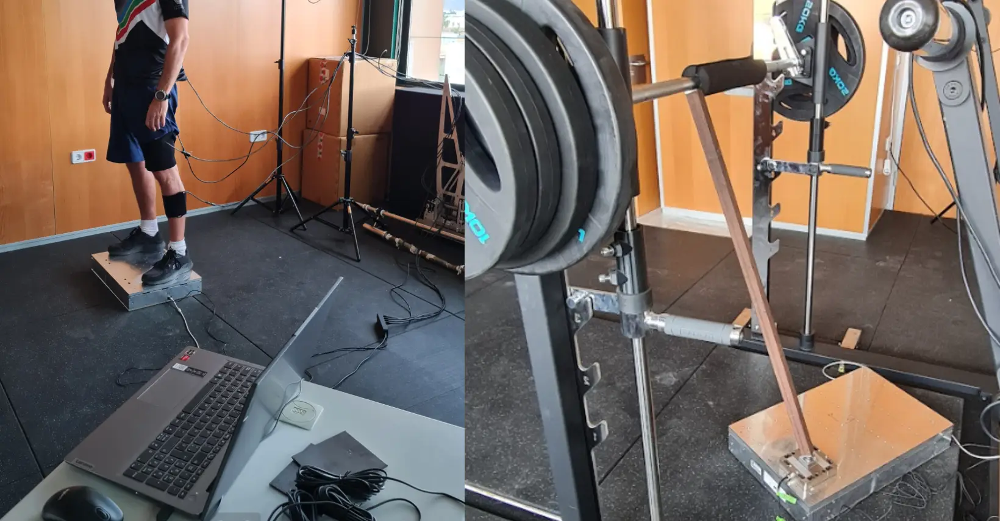

Research
Autobiography
In 2019 I completed my undergraduate studies in Mechanical Engineering and started my path in research, with several projects in different areas such as robotics, autonomous navigation, non-intrusive monitoring and biomechanics. In 2022 I combined part of these projects with a Masters in Industrial Engineering, which I managed to finish in 2024.
Currently, I am pursuing my PhD entitled "Control and optimisation techniques for efficient and sustainable integration of desalination technologies in CSP plants" at the Solar Thermal Applications Unit of the Almería Solar Platform, part of the Research Centre for Energy, Environment and Technology (CIEMAT).
Projects
Software development and calibration of a force platform for sports science
Master's Thesis in Industrial Engineering - 2024

- Data acquisition software development in Python with data synchronization between multiple sensors.
- Calibration procedure of a new triaxial force platform.
- Practical applications of the developed software: squat exercises, biomechanical validations, vetical jump analysis and posture evaluation during bicep curls.
Institutional repository (available soon)
Project public repositories in GitHub
Improvement of the sensor system in the strength training machine
Research Project "Design, Manufacturing, and EMG-Biomechanical Assessment of a Constant Force Mechanism" - 2023

- Sensor reading software developed in Python with QT.
- Programming in Matlab for processing the data recorded during measurements.
- Development of multibody models for bench press and squat exercises.
Project public repositories in GitHub
Analysis and efficient management of electrical energy using IoT sensors and distributed cloud computing
Research Project "Analysis and efficient management of electrical energy using IoT sensors and distributed cloud computing" - 2022

- Real-time integration of electrical consumption into machine learning systems using smart meters and high-precision power quality analyzers.
- Development of a predictive model for electrical consumption disaggregation using particle filter algorithms.
Drone indoor autonomous navigation in greenhouses
Research Project "Real-time integration of electrical consumption into machine learning systems using smart meters and high-precision power quality analyzers" - 2021
Student Grant "DroneCrop" - 2019
- Development of a ROS environment for indoor drone navigation.
- Use of Ultra Wide Band (UWB) technology combined with particle filters and computer vision.
- SLAM optimization (ORB-SLAM3) using factor graphs with the GTSAM library.
- Development of the navigation control algorithm, including a route planning system using the MRPT library.
Integration and characterization of the photovoltaic system in the UAL-eCARM vehicle
Bachelor's Degree Final Project - 2019

- Software development for reading data through ROS (Robot Operating System).
- Assembly of the electric system and components in the vehicle.
- Measurement and evaluation of data.
Project public repositories in GitHub
Simulation and installation of a micro-grid with solar energy
Internship at the Solar Energy Research Centre (CIESOL) - 2019
- Design and material quotation of support platforms for solar panels, with SolidWorks.
- Assembly and installation of a micro-grid with solar energy.
- Data analysis using Matlab via modbus protocol, and configuration of the system in Energy Storage System (ESS) mode to store surplus electrical energy in batteries.